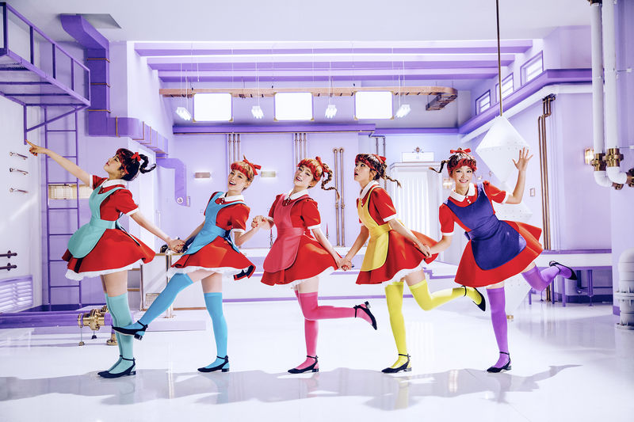

-
Pre-debut
Tres de las cuatro miembros originales (Irene, Seulgi y Wendy) de Red Velvet fueron previamente parte del grupo pre-debut de SM Entertainment, SMROOKIES, del que también formaba parte Yeri. Irene fue descubierta por SM en 2009, y es una talentosa rapera y bailarina.
-
Seulgi fue elegida por SM en la audición del 2007, y es experta en canto y baile. Wendy fue reclutada en el 2012 a través de la audición global de SM en Canadá. Ella es un talento vocal que cantó para la banda sonora del drama "Mimi".
-
Joy se unió a SM a través de su audición global en Seúl en el 2012, y es talentosa tanto en baile como en canto. Yeri la maknae del grupo se unió a SM a través de las audiciones en USA 2011, siendo la rapera y sub vocalista del grupo.
-
Con la incorporación de una chica desconocida para los internautas (Joy), el grupo de cuatro miembros debutó como Red Velvet.
-
2014: Debut con su primer sencillo 'Happiness'
En julio del 2014, SM Entertaiment confirmó que en agosto debutaría un nuevo grupo de chicas que estaría conformado por Irene, Seulgi, Wendy y Joy. Ese mismo mes se publicó el adelanto del vídeo musical de su canción debut, titulada 'Happiness', acompañado de fotos individuales de las integrantes.
-
El grupo realizaría su primera presentación debut el 1 de agosto en Music Bank (KBS). El 01 de agosto de 2014, se lanzó el vídeo musical de 'Happiness' y fue el segundo vídeo musical K-Pop más visto en todo el mundo durante el mes de agosto en ese año.
-
Red Velvet debutó en lo alto de las listas musicales. Su primer sencillo digital tuvo resultados excepcionales para un grupo novato, labrándose la cima hasta el puesto número uno de la lista musical "Genie". /p>
-
Regreso con su segundo sencillo 'Be Natural'
El 7 de octubre, SM Entertainment anunció el regreso del grupo con su segundo sencillo digital, titulado 'Be Natural'. 'Be Natural' es una canción que recibió mucho amor después de ser lanzada originalmente en el 2000 por S.E.S.
-
El 09 de octubre, el grupo comenzó sus actividades de promoción haciendo su primera aparición en el programa de música, M! Countdown (Mnet). El mismo día, fue publicado el vídeo musical de su segundo sencillo. El 13 de octubre, fue lanzado el segundo sencillo digital 'Be Natural' en varios sitios de música.
-
2015: Primer mini-álbum 'Ice Cream Cake/Automatic'
En marzo del 2015, SM Entertaiment anunció que lanzara su primer mini álbum, que se titulara 'Ice Cream Cake'. El mismo día, la agencia presentó a la nueva integrante, Yeri. SM Entertainment lanzo el video musical de su segundo sencillo titulado 'Automatic'. Un día más tarde se lanzo el video musical principal llamado 'Ice Cream Cake'.
-
'Automatic' tiene una temática más oscura, sexy y misteriosa, con un estilo musical Classic Rock, mientras que 'Ice Cream Cake' es más alegre y colorido. Su nuevo sencillo fue coronado como 'Gaon Weekly Album Sales Chart' en su primera semana.
-

Regreso con su primer álbum completo 'The Red'
El 3 de septiembre, Red Velvet, reveló la lista de canciones para su próximo primer álbum completo 'THE RED'. La canción principal fue 'Dumb Dumb'.
-
El 9 de septiembre, publicaron el videoclip de su nuevo sencillo 'Dumb Dumb', tomando la imagen de cinco muñecas robóticas y monótonas con prendas retro y coloridas. Ese mismo día, lanzaron su primer álbum completo.
-
'Dumb Dumb' fue nombrado entre los 10 mejores vídeos del 2015 por la revista Rolling Stone. Rolling Stone elogió el video musical por su “claro y desconocido gusto estético”.
-
2016: Segundo mini-álbum 'The Velvet'
A principios de marzo, SM Entertainment confirmó que Red Velvet realizaría su regreso en ese mismo mes (marzo).
-
Más tarde, una nueva imagen de Irene fue publicada, en ella se reveló el título de su próximo Mini-Álbum 'The Velvet', que sería lanzado el 16 de marzo. En marzo se confirmó la lista de canciones de 'The Velvet', el cuál contendría 8 canciones en total.
-
El 17 de marzo, finalmente, Red Velvet liberó su nuevo mini-álbum 'The Velvet', así como también el vídeo musical de su nueva canción 'One Of These Nights'. Ese mismo día, realizaron su primera presentación de regreso en M! Countdown (Mnet).
-
Regreso con su tercer mini-álbum 'Russian Roulette'
A fines de agosto, SM Entertainment anunció que el grupo regresaría con su tercer mini álbum se titularía 'Russian Roulette'. 'Russian Roulette' es una canción synth pop y se espera que muestre los encantos únicos de Red Velvet.

-
El 7 de septiembre, Red Velvet lanzo su tercer mini album 'Russian Roulette', así también como su vídeo musical del mismo nombre.
-
'Russian Roulette' fue nombrado como uno de los top 10 MV mas vistos del K-pop en Estados Unidos tanto como a nivel mundial; realizado por Billboard.
-
2017: Cuarto Mini Álbum 'Rookie'
El 24 de enero, el sitio web del grupo fue actualizado con una foto de fondo que muestra a las integrantes luciendo adorables entre patos de goma, cupcakes coloridos y otras golosinas, y piden a los fans que las encuentren con un globo de texto que dice “Find Me!”.
-
El 26 de enero Red Velvet lanzó un teaser clip de su video musical para Rookie. La canción será la pista título de su nuevo mini álbum, que contará con seis canciones en total. El 1 de febrero, Red Velvet revelo el video musical para Rookie y su cuarto mini álbum del mismo nombre.
-
Regreso con el Quinto Mini Album 'The Red Summer'
Red Velvet revelo la portada de su quinto mini album “The Red Summer” y SM entertainment reveló que el grupo tendría su primera presentación en el concierto SMTOWN Live VI que se celebrará en Seul el 8 de julio.

-
El 9 de julio el grupo hizo su regreso con su quinto mini album “The Red Summer” y el video musical para su cancion principal “Red Flavor”.